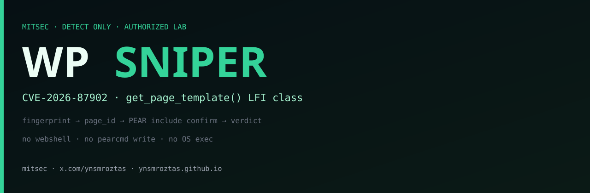
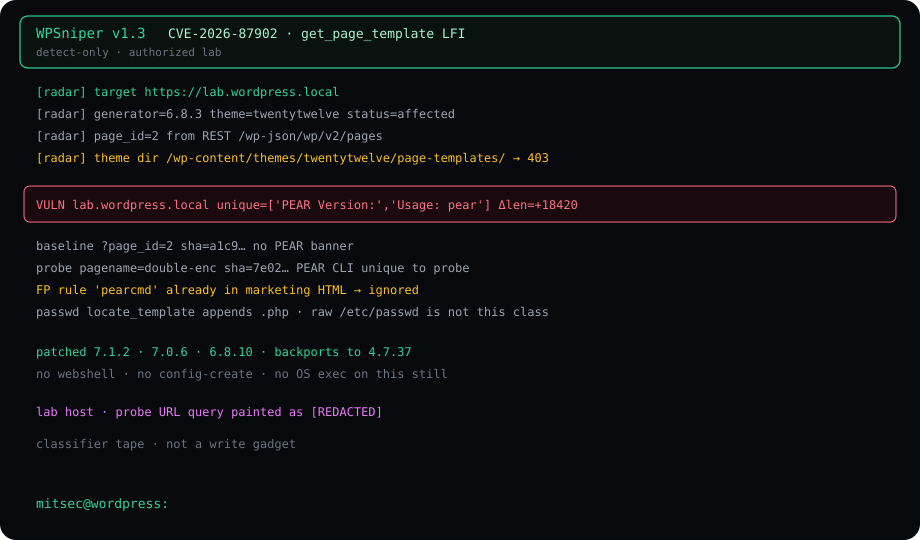
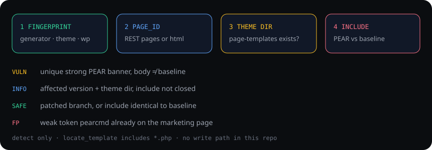

Summary
CVE-2026-87902 sits in page-template resolution. WordPress builds page-{$pagename}.php from a URL-derived, url-decoded query variable and locate_template() includes the result. On affected builds the path is not forced to stay inside an allowed theme directory.
A closed include needs two preconditions: a top-level theme folder whose name starts with page- (the documented page-templates/ layout), and a readable .php target for the web-server account. RCE is a possible follow-on. That follow-on is not on this page and not in the public helper.
Finder on the CVE: Robert (ressl), WordPress HackerOne. Patch window starts at 7.1.2 with backports to 4.7.37. This note is the class and the classifier.

What the operator does

- Home HTML + generator +
/feed/— WordPress, version, theme slug. - REST
/wp-json/wp/v2/pagesorpage_id=in HTML — a published page so the template path actually runs. GET /wp-content/themes/{slug}/page-templates/— 200 / 401 / 403 means the directory exists.- Baseline
?page_id=Nversus the include probe. Confirm is digest mismatch plus unique strong PEAR tokens.
Confirm rule
A marketing page that mentions “pearcmd” is not a hit.
- VULN — probe digest ≠ baseline, and at least one strong token is unique to the probe (
PEAR Version:,Usage: pear,PEAR_Config,Commands for pear). - INFO — affected version and/or
page-templatesdirectory, include not closed. Do not file critical on INFO. - SAFE — patched branch, or include identical to baseline.
- SKIP — not WordPress.
weak token pearcmd already in baseline HTML FP unique PEAR Version: + Usage: pear + Δlen VULN locate_template appends .php · raw /etc/passwd is the wrong oracle
Redacted lab pass
WPSniper v1.3 CVE-2026-87902 target https://lab.wordpress.local generator 6.8.3 theme twentytwelve status affected page_id 2 theme dir /wp-content/themes/twentytwelve/page-templates/ → 403 VULN unique=['PEAR Version:','Usage: pear'] Δlen=+18420 patched 7.1.2 · 7.0.6 · 6.8.10 · backports to 4.7.37 mitsec@wordpress:
What this page will not do
- No webshell, no
pearcmd config-create, no OS exec. - No live customer hostname.
- No instruction to run this against a host you do not own or have in writing.
Fix
Upgrade to 7.1.2 or the backport for the branch: 7.0.6 · 6.9.9 · 6.8.10 … down to 4.7.37. The patch requires the resolved template path to stay inside an allowed theme directory. That is the fix, not a WAF rule.
Repo
WPSniper stays on GitHub. Classifier model. Written scope. Own lab.